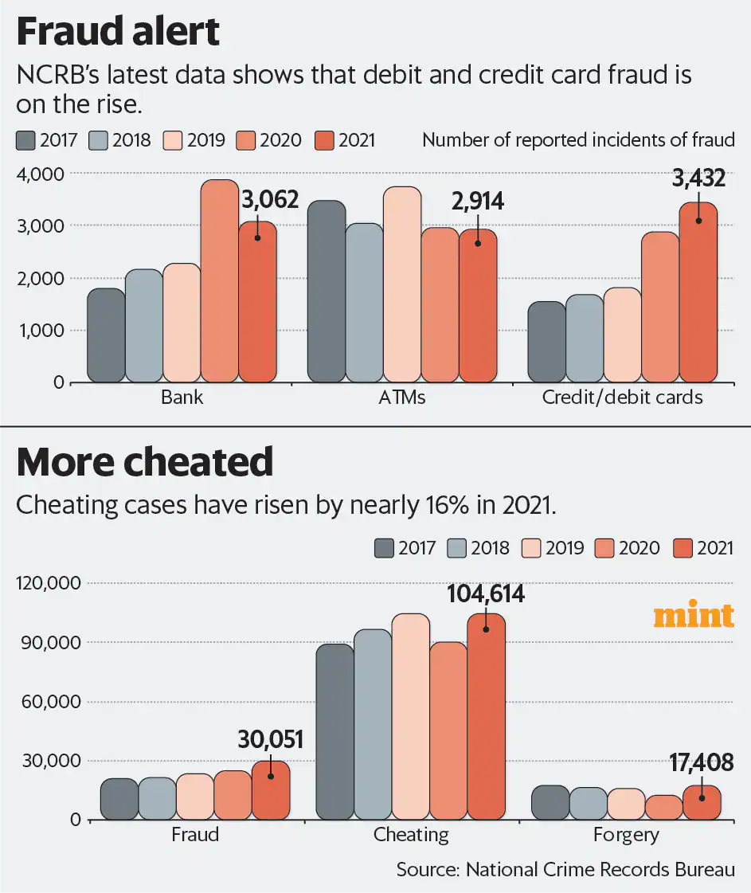

History

What is Credit Card Fraud Detection?
Credit card fraud detection refers to the set of policies, tools, methodologies, and practices that credit card companies and financial institutions use to prevent fraudulent purchases, both online and in-store. It involves using various techniques and technologies to identify potentially fraudulent transactions in real-time or post-transaction analysis. The goal is to minimize financial losses for both cardholders and card issuers by quickly identifying and stopping unauthorized or suspicious transactions. Stats:Credit card fraud detection
-> Stolen credit card details are available for £1 each online
-> 44% of credit card users reported having two or more fraudulent charges in 2022.
-> People in their 30s are the most vulnerable to credit card fraud.
Some Useful Statistics
In 2021, credit and debit card fraud cases in India surged nearly 20% to 3,432, continuing a two-year upward trend. Meanwhile, ATM fraud dropped by 1.5%. Economic offences, including criminal breach of trust, counterfeiting, and forgery, rose by 19.4% overall. Telangana was the worst-hit state with 1,092 card fraud cases. To combat rising fraud, the Reserve Bank of India plans to establish a fraud registry to track and blacklist fraudsters using their IP addresses and phone numbers.